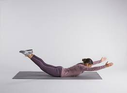

Pull-Ups

Pull-ups are a classic bodyweight exercise that targets the upper back, including the latissimus dorsi and the upper trapezius.
Movement Category: Bodyweight
Programming: 3-4 sets of 8-12 repetitions
Weight: Bodyweight
To do pull-ups:
- Hang from a pull-up bar with your palms facing away from you, hands shoulder-width apart.
- Pull yourself up until your chin is above the bar, keeping your core engaged.
- Lower yourself back down to the starting position with control.
- Repeat for the desired number of repetitions.
Bent Over Rows

Bent over rows target the upper back, particularly the latissimus dorsi, rhomboids, and posterior deltoids. This exercise also engages the biceps and forearms.
Movement Category: Compound
Programming: 3-5 sets of 6-10 repetitions
Weight: Use a weight that challenges you while maintaining proper form.
To do bent over rows:
- Stand with your feet shoulder-width apart, knees slightly bent, and hold a barbell or dumbbells with an overhand grip.
- Bend forward at your hips while keeping your back straight, maintaining a slight bend in your knees.
- Pull the weight towards your lower chest by bending your elbows and squeezing your shoulder blades together.
- Lower the weight back down with control.
- Repeat for the desired number of repetitions.
Wide Grip Lat Pulldown

The wide grip lat pulldown primarily targets the latissimus dorsi, helping to build width and strength in the upper back.
Movement Category: Isolation
Programming: 3-4 sets of 8-12 repetitions
Weight: Use a weight that allows you to complete the set with proper form.
To do wide grip lat pulldown:
- Sit down at a lat pulldown machine with a wide bar attached to the pulley.
- Grab the bar with an overhand grip that is wider than shoulder-width apart.
- Pull the bar down towards your upper chest while arching your back slightly and squeezing your shoulder blades together.
- Slowly return the bar to the starting position with control.
- Repeat for the desired number of repetitions.
T-Bar Rows
T-Bar rows are a compound exercise that targets the upper back, including the latissimus dorsi, rhomboids, and rear deltoids.
Movement Category: Compound
Programming: 3-4 sets of 8-12 repetitions
Weight: Use a weight that challenges you while maintaining proper form.
To do T-bar rows:
- Position a T-bar row machine over a landmine or in a corner to secure it.
- Stand over the bar with your feet shoulder-width apart and hinge forward at your hips while keeping your back straight.
- Grab the handles with both hands using an overhand grip.
- Pull the bar towards your lower chest by bending your elbows and squeezing your shoulder blades together.
- Lower the bar back down with control.
- Repeat for the desired number of repetitions.
Seated Cable Rows
Seated cable rows target the middle back, including the rhomboids, mid-trapezius, and rear deltoids.
Movement Category: Compound
Programming: 3-4 sets of 8-12 repetitions
Weight: Use a weight that allows you to complete the set with proper form.
To do seated cable rows:
- Attach a V-bar or wide-grip handle to the cable pulley machine.
- Sit down with your feet on the platform and your knees slightly bent.
- Grab the handle with both hands and sit upright with your chest up.
- Pull the handle towards your lower chest by bending your elbows and squeezing your shoulder blades together.
- Slowly return the handle to the starting position with control.
- Repeat for the desired number of repetitions.
Dumbbell Rows
Dumbbell rows are effective for targeting the middle back, especially the rhomboids, mid-trapezius, and posterior deltoids.
Movement Category: Compound
Programming: 3-4 sets of 8-12 repetitions per arm
Weight: Use a weight that challenges you while maintaining proper form.
To do dumbbell rows:
- Place a dumbbell on the floor next to a bench.
- Place your left knee and hand on the bench for support and pick up the dumbbell with your right hand.
- Keep your back straight and pull the dumbbell towards your hip by bending your elbow and squeezing your shoulder blade.
- Lower the dumbbell back down with control.
- Repeat for the desired number of repetitions and switch sides.
Cable Pullover
Cable pullover targets the lats and upper back, providing a good stretch and contraction.
Movement Category: Isolation
Programming: 3-4 sets of 10-12 repetitions
Equipment Needed: Cable machine with a straight bar attachment
To do cable pullover:
- Attach a straight bar to a high pulley cable machine.
- Stand facing away from the machine, grab the bar with a wider than shoulder-width overhand grip.
- Step forward slightly and bend your knees slightly.
- Keep your back straight and pull the bar down in front of you while keeping your arms slightly bent.
- Feel the stretch in your lats as you lower the bar down as far as comfortably possible.
- Slowly return to the starting position while keeping tension on the back muscles throughout.
- Repeat for the desired number of repetitions.
Deadlifts

Deadlifts are a compound exercise that targets the lower back, hamstrings, glutes, and entire posterior chain.
Movement Category: Compound
Programming: 3-5 sets of 4-8 repetitions
Weight: Use a weight that challenges you while maintaining proper form.
To do deadlifts:
- Stand with your feet hip-width apart, toes under the barbell.
- Bend down and grip the barbell with both hands, using an overhand or mixed grip.
- Keep your back flat, chest up, and core engaged as you lift the barbell by straightening your hips and knees.
- Stand tall with the barbell, then lower it back down by pushing your hips back and bending your knees.
- Repeat for the desired number of repetitions.
Hyperextensions
Hyperextensions target the lower back, glutes, and hamstrings, improving posture and core stability.
Movement Category: Isolation
Programming: 3-4 sets of 10-15 repetitions
Weight: Use bodyweight or hold a light weight plate across your chest.
To do hyperextensions:
- Position yourself face down on a hyperextension bench with your hips at the edge and your feet secured.
- Cross your arms over your chest or hold a weight plate against your chest.
- Lower your upper body towards the floor, keeping your back straight.
- Lift your upper body back up until your back is parallel to the floor, squeezing your lower back and glutes.
- Repeat for the desired number of repetitions.
Superman Exercise
The Superman exercise targets the lower back, glutes, and hamstrings, improving spinal stability and core strength.
Movement Category: Isolation
Programming: 3-4 sets of 12-15 repetitions
Weight: Bodyweight
To do the Superman exercise:
- Lie face down on the floor with your arms extended overhead and your legs straight.
- Engage your core, then lift your arms, chest, and legs off the floor simultaneously.
- Hold the lifted position for a moment, then lower back down with control.
- Repeat for the desired number of repetitions.